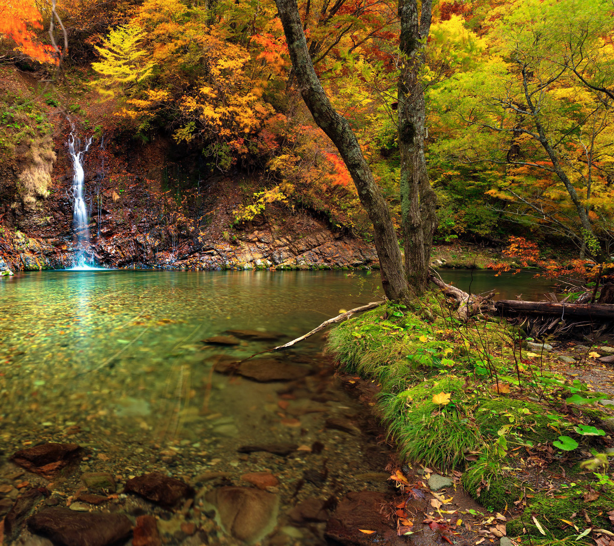
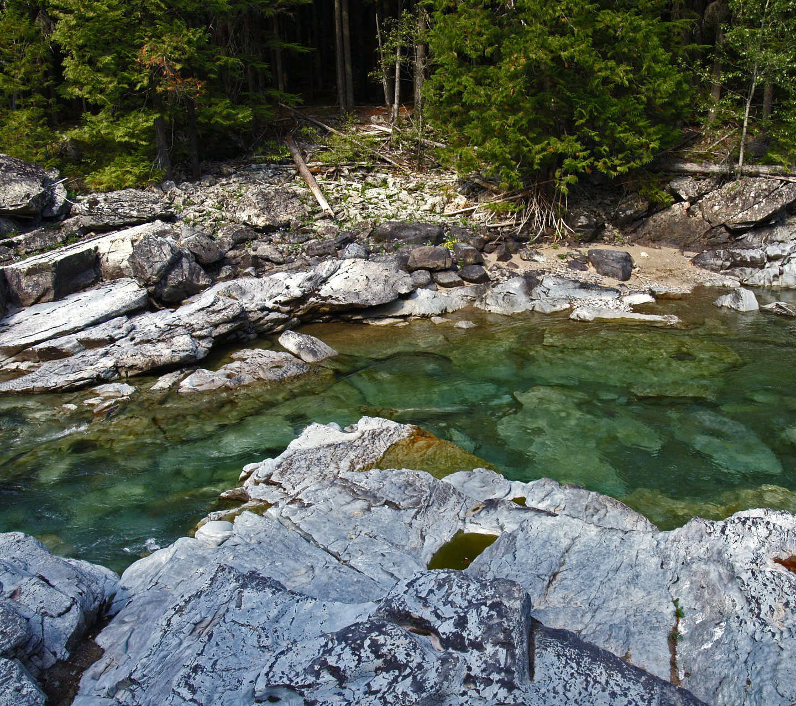
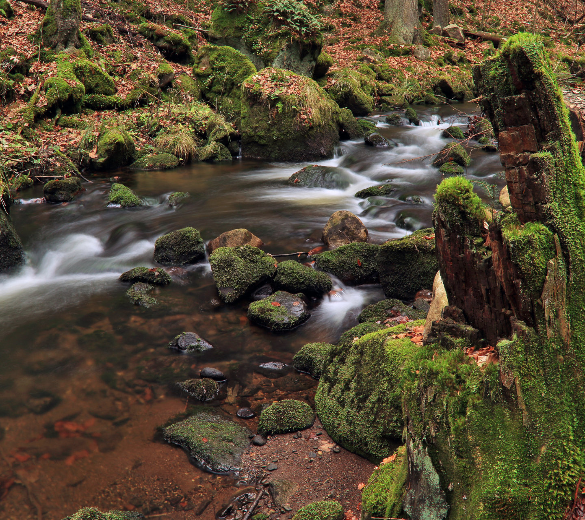

Similar to how our bodies change the things we eat and drink into energy through a series of chemical reactions, the collective conversion, production, and dissipation of energy across an entire ecosystem is termed ecosystem metabolism. Instead of thinking about the metabolism of an individual, ecosystem metabolism looks at the sum of these processes across the ecosystem.
We think about ecosystem metabolism in terms of two important rates; production and respiration. Primary producers, mostly plants and algae, use energy from the sun to create new organic matter through photosynthesis and we measure this rate as something called gross primary productivity (or production) (GPP). Ecosystem respiration (ER) is simply the total respiration of organisms in the environment. These two rates (GPP and ER) are fundamental ecosystem processes. We can measure ecosystem metabolism across many environments including rivers, lakes, and forests. The ability to make measurements across environments makes ecosystem a a common currency for monitoring and comparing systems.

Ecosystem metabolism is related to the cycling of oxygen, carbon dioxide, carbon, and energy through an ecosystem. Because GPP and ER are opposing processes, the balance between them will determine things like whether an ecosystem is releasing or storing carbon. We also care about how energy flows through food webs and shapes local communities. Because ecosystem metabolism integrates across an entire environment, it is also a powerful tool to monitor how ecosystems respond to change.

There are a few ways to ecosystem metabolism and the exact details will depend on whether measurements are being made in forests, rivers, lakes etc… Generally it is measured based on fluxes of gasses. In rivers this is commonly done by measuring the concentration of oxygen in the water across an entire day. The daily changes in oxygen concentration can be used in a model to estimate GPP and ER. In terrestrial systems ecosystem metabolism is measured using the eddy covariance approach which looks at small packets of turbulent air (eddies) which looks at how changing wind and gas concentrations change together, or covary, hence the name eddy covariance.

I have mostly worked on studying ecosystems metabolism in rivers and streams. Just like in terrestrial systems, GPP is limited by a combination of light, nutrients, and temperature. But rivers can also experience intense and frequent disturbances which make ecosystem much more variable than most terrestrial systems. The widespread availability of reliable high-frequency sensors capable of creating the necessary data to estimate stream metabolism is still relatively new. As a member of the StreamPULSE project I explored patterns of metabolism across many sites. Through this comparison we were able to identify some common patterns and controls of metabolism.